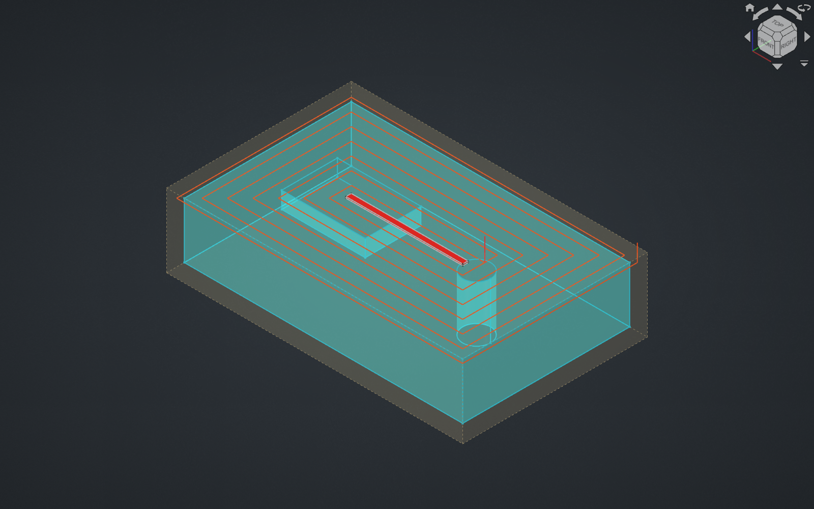
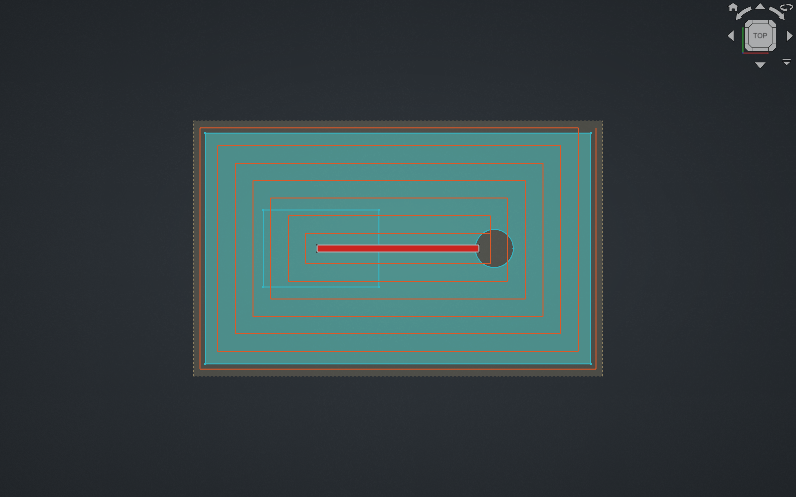

CAM unit tests with the PR applied: Ran 2139 tests · OK (skipped=11, expected failures=4)


I built a 100 x 60 x 20 plate with a shallow pocket and a through hole, in a Job with default stock. On it I added a MillFacing op: Spiral Rectangular, 6 mm end mill, Step Over 80%. I ran the op through main's and the PR's spiral_facing.py and measured the stock top that the tool never sweeps. That area is the stock-top rectangle minus the union of every feed move at final depth, each widened by the tool radius.
| Step Over | main: uncut | PR: uncut | main: commands | PR: commands | main: feed length | PR: feed length |
|---|---|---|---|---|---|---|
| 50% | 0 | 0 | 59 | 55 | 2784.6 mm | 2702.6 mm |
| 70% | 0 | 0 | 43 | 39 | 1898.9 mm | 1765.4 mm |
| 80% | 84 mm² (81.18 exact) | 0 | 35 | 35 | 1555.8 mm | 1528.7 mm |
| 90% | 1.08 mm² | 1.08 mm² | 35 | 35 | 1507.8 mm | 1511.9 mm |
cam_coverage on the PR op at 80% (0.2 mm grid) agrees: 0 points missed.
I also ran the generator directly on 4 rectangle sizes x 7 stepovers. Uncut area on a 0.1 mm grid:
| Size | main @80% | PR @80% | main @90% | PR @90% |
|---|---|---|---|---|
| 100 x 60 | 101.8 mm² | 0 | 9.0 mm² | 0.99 mm² |
| 114 x 94 | 44.0 mm² | 0 | 17.9 mm² | 1.5 mm² |
| 47 x 47 | 3.2 mm² | 0 | 0.80 mm² | 0.77 mm² |
| 30 x 20 | 18.6 mm² | 0 | 0.85 mm² | 0.80 mm² |
From 25% to 70%, both main and the PR leave 0 at every size. The PR uses 4 to 8 fewer commands there, because main's extra loops near the center are gone. Conventional, reverse, 90° and 30° angle variants at 70% all leave 0 on both.
At 90%, both versions leave small cusps at the loop corners. This is the known geometric limit above about 85% that the author mentions. The PR makes it smaller or equal in every case I measured.
| Boundary, tool 5 mm | main | PR |
|---|---|---|
| 6.002 x 9, 40% | 14,005 commands | 9 |
| 6.2 x 9, 40% | 145 commands | 9 |
Confirmed as described.
The first loop's offset is the same as before (stepover - radius), so the first cut is unchanged. The change only moves the inner loops.
The full CAM suite passes on the PR build: 2139 tests, OK (11 skipped, 4 expected failures). The two new tests in TestPathFacingGenerator run and pass:
test_spiral_reaches_center_high_stepover checks the claim at 80%.test_spiral_no_extra_loops_near_center checks the runaway case. It only catches a large runaway (fewer than 20 commands), not one extra loop. That is fine for a regression guard.No task panel or .ui changes. In the GUI I edited Step Over on the live MillFacing op through the Property View (80 → 60 → 80). The op recomputed each time and stayed up to date. This is in the video.
No properties were added, removed or renamed. A saved Spiral Rectangular op loads unchanged, and gives the new, shorter path when recomputed (see the table above).
None. The code-review pass raised only minor items. I checked them and dropped them:
spiral_facing.py:219): also on main. The PR did not change that line's behavior.spiral_facing.py:215): an 8.0004 mm wide boundary at 80% / 5 mm now gives a second lap 0.2 µm inside the first, where main gave one lap. It is harmless, wastes one lap, and only happens when the half-width is within a few microns of the stepover. Not a defect.foo.zip in this session, so I reproduced the same symptom on my own plate: main leaves a center strip, the PR leaves none.demo.mp4: main's leftover strip, the PR's path on the same op, then a live Step Over edit.main_spiral_80pct.png, main_spiral_80pct_top.png: main at 80%, uncut strip in red.pr_spiral_80pct.png: PR, same op and settings.